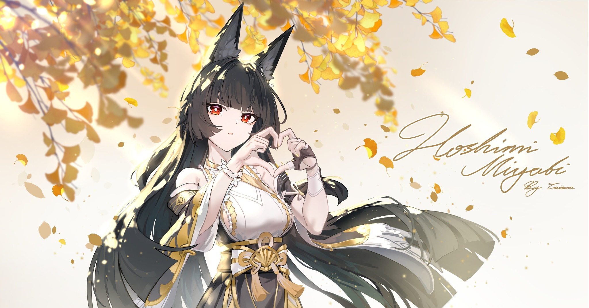
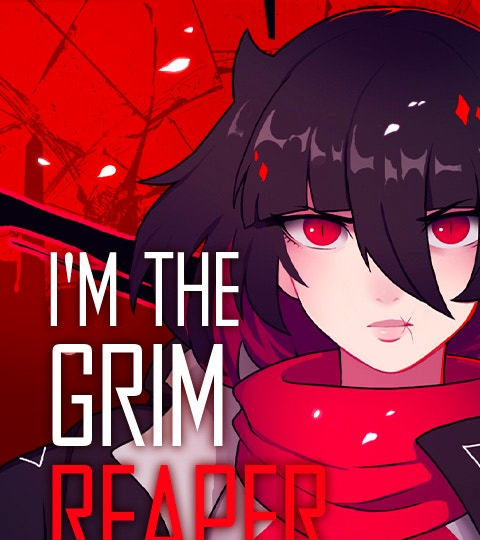
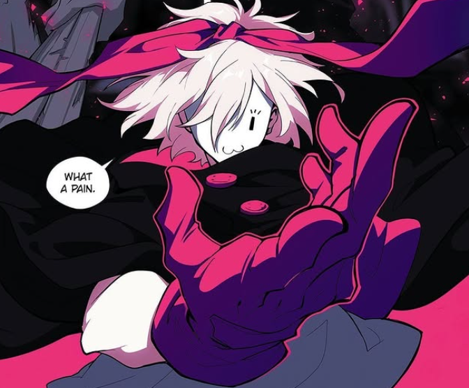

Olá, eu sou
Matheus.
Sou estudante e gosto de tecnologia, programação, jogos, histórias e automobilismo. Esta página reúne um pouco das coisas que fazem parte dos meus interesses.
Quem sou eu?
Meu nome é Matheus Pedro Alves Bueno. Tenho interesse pela área de tecnologia e gosto de aprender sobre programação e desenvolvimento de sistemas. Também gosto de conhecer assuntos diferentes e acompanhar histórias e universos fictícios.
No meu tempo livre, costumo me interessar por jogos, personagens, carros e pistas de corrida. Cada um desses assuntos representa uma parte diferente do que eu gosto.
Assuntos que estudo
Tecnologias e conteúdos que fazem parte dos meus estudos.
Meus interesses
Alguns jogos e histórias que chamam minha atenção.

Zenless Zone Zero
Uma das minhas personagens favoritas é a Miyabi. Consegue uma na minha conta de Zenless Zone Zero

I'm the Grim Reaper
Uma webtoon que acompanho. Detalhe que ela precisa matar um pecador antes da meia noite ou ela vai pro inferno

Brook
Também gosto bastante do Brook, meu personagem favorito da webtoon. Ele evolui bastante com o tempo e virou meu personagem favorito
Carros e automobilismo
Gosto de carros esportivos e de conhecer pistas e lugares ligados ao automobilismo.
Autobahn — Alemanha
A Autobahn é uma das coisas que me fazem ter vontade de conhecer a Alemanha. Algumas partes da rede rodoviária não possuem limite geral de velocidade, o que chama a atenção de quem gosta de carros.
Nürburgring
Conhecida como “Inferno Verde”, Nürburgring é uma pista lendária que já recebeu diferentes categorias do automobilismo. Sua história, suas corridas e seus desafios tornam o circuito muito interessante.
Galeria
Algumas imagens relacionadas aos assuntos que mencionei.